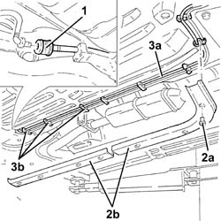
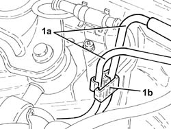
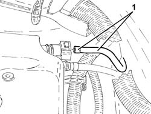

1080E58 INTERMEDIATE fuel vapour PIPE between fuel vapour SEPARATOR and ACTIVE CHARCOAL FILTER - R.R.
- Path
- Procedures > 10 ENGINE > 1080 EXHAUST EMISSION CONTROL SYSTEM > 1080E evaporation control system > 1080E58 INTERMEDIATE fuel vapour PIPE between fuel vapour SEPARATOR and ACTIVE CHARCOAL FILTER - R.R.
- Kind
- repair procedure (removal / refitting; the operation number is the code)
- Applies to
- engines: 2.5 V6, 3.2 V6; all production periods
- Interactive page
- https://sloeber94.github.io/elrnDB-a156/en/#/3237601
Applies to: engines: 2.5 V6, 3.2 V6; all production periods
 Removing
Removing
 Refitting
RefittingPosition the vehicle on the ramp.
Proceed with the removal 4450B10 Front WHEEL (one) - R.R. (Right side).
1. Disconnect the coupling of the intermediate fuel vapour pipe between fuel vapour separator and activated carbon filter.
2. Remove fastenings (2a) and remove underbody protections (2b) of the fuel vapour and fuel pipes.
3. Release the intermediate fuel vapour pipe between fuel vapour separator and activated carbon filter (3a) from fastenings (3b).

Applies to: engines: 2.5 V6, 3.2 V6; all production periods
1. Release pipes (1a) from fastening (1b).

Applies to: engines: 2.5 V6, 3.2 V6; all production periods
Proceed with the removal 1008C10 power unit upper reaction link r r .
Proceed with the removal 1008C16 body link bracket - r r .
1. Disconnect the intermediate fuel vapour pipe between fuel vapour separator and activated carbon filter, then remove after releasing from the remaining fastenings.

Applies to: engines: 2.5 V6, 3.2 V6; all production periods
Refitting
RemovingRefit the intermediate fuel vapour pipe between fuel vapour separator and activated carbon filter, connect and secure.
Proceed with the refitting 1008C16 body link bracket - r r .
Proceed with the refitting 1008C10 power unit upper reaction link r r .
Secure the pipes using a band.
Secure the intermediate fuel vapour pipe between fuel vapour separator and activated carbon filter to the underbody fastenings.
Refit the fuel vapour and fuel pipe underbody protections and secure.
Connect the coupling of the intermediate fuel vapour pipe between fuel vapour separator and activated carbon filter.
Proceed with the refitting 4450B10 Front WHEEL (one) - R.R. (Right side).
Remove the car from the ramp.